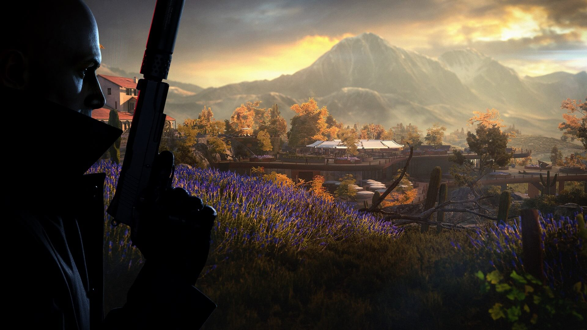
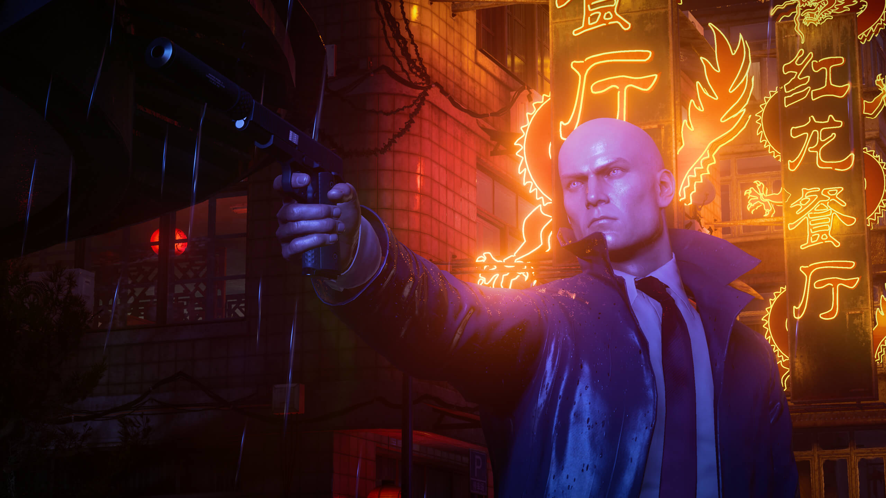

Hitman 3

Aviso: Este análisis se ha hecho jugando solo la versión de PC
Hitman es una saga de videojuegos veterana y una de las pocas sobrevivientes del "género" del sigilo que sigue hoy día en el candelero gracias a su última trilogía que, con Hitman 3, pone punto y final a la historia del Agente 47, al menos por ahora, con IO Interactive dando sus primeros pasos en otros proyectos como su recientemente anunciado basado en 007.
Hoy, en RageQuit, vamos a hablar de lo que nos ha parecido la última entrega de estos tres episodios que comenzaron a publicarse en 2016 y que llegan ahora a su capítulo final que nos permite disfrutar del juego más redondo hasta la fecha, con los niveles mejor diseñados de los últimos años (al menos bajo nuestro punto de vista) y con mejoras que han hecho que disfrutemos como nunca de ponernos un disfraz, infiltrarnos en un lugar y eliminar a nuestros objetivos de mil y un formas diferentes.
Trailer
El último tango del Agente 47.
No vamos a resumir la trama de esta última trilogía de Hitman porque es bastante probable que alguno o varios de ustedes hayan decidido esperar a su episodio final para jugarla entera de principio a fin pero lo que sí les diremos es que estamos ante el último tango (al menos por ahora) del asesino más icónico del mundo de los videojuegos, cerrando un ciclo de una forma bastante convincente y que nos deja con ganas de más Hitman aunque sea en un futuro lejano, ya que la saga también da algunas señales de agotamiento tras los últimos 5 años cargados de títulos y contenido.
En general estamos satisfechas con cómo se cuenta lo que resta de historia, una trama que adquiere más importancia durante las misiones y que no se limita a estar presente simplemente en los interludios.
Los mejores niveles de Hitman.
Algo que nos encanto de esta nueva entrega es el diseño de todos y cada uno de los niveles a los que nos hemos tenido que enfrentar tanto a nivel artístico como en desafíos, opciones, posibilidades, tamaño y todas las intrahistorias y oportunidades que nos ofrecen para que podamos aprovecharlas con el Agente 47. Estuvimos compenetradas en todas y cada una de las áreas que hemos tenido que visitar ya han encontrado espacios para momentos no tan habituales en la saga con más trama durante las misiones y algunas situaciones (en momentos muy concretos) a las que no estamos tan acostumbradas.
De hecho, creemos que en esta entrega están presentes dos de los mejores niveles de la historia de Hitman, uno de ellas por la ambientación y las subtramas que nos ofrece alrededor de todo el nivel y la otra por las grandes posibilidades que hay a nivel jugable, siendo tan grande como complejo y rico en opciones. No vamos a decir los dos nombres para que los descubran ustedes mismos y puedan disfrutar de estas sorpresas.
Además, todas y cada una de las localizaciones guardan un montón de secretos, caminos, detalles e historias que nos permitirán conocer más de nuestras víctimas, eliminarlas de formas espectaculares y, en definitiva, darnos una profunda rejugabilidad que nos permite disfrutar una y otra vez de la libertad característica de la saga sin importar si queremos jugar con más o menos ayudas o plantear las misiones de diferenmtes formas.
En cuanto a la duración, una primera vuelta por todas las localizaciones nos lleva unas 7 u 8 horas pero su alta rejugabilidad hace que se le pueda sacar mucho más tiempo de diversión. Pese a esto, los objetivos o cómo se plantean las misiones en ciertos lugares nos recuerdan a planteamientos en juegos pasados y muestran los signos de agotamiento lógicos de una saga que lleva tres juegos en apenas cinco años.
Atajos y una nueva cámara como compañera.
Tal y como comentamos en nuestras impresiones las principales novedades a nivel jugable de Hitman 3 son dos: Una cámara que nos acompaña en todo momento y los atajos permanentes. La cámara (Además de poder hacer fotos) nos permite realizar ciertas acciones interesantes como hackear mecanismos de seguridad, escanear documentos u otros objetos e incluso activar códigos QR para obtener más información de una localización en concreto.
En cuanto a los atajos permanentes hablamos de puertas, escaleras u otras rutas que podemos desbloquear durante nuestra partida y que permanecen activas en nuestras posteriores visitas a un mismo nivel.
Concluciones.
Hitman 3 es probablemente el mejor juego de la última trilogía del Agente 47, un título redondo que cuenta con algunos de los mejores niveles de la saga, multitud de posibilidades, libertad de movimientos y nuevas herramientas para aderezar un poco la fórmula jugable.
Estamos ante una obra notable aunque también comienzan a aparecer algunos signos de agotamiento en la saga, por lo que nos parece aún mejor la decisión de IO Interactive de concluir esta trilogía por la puerta grande y dejar que nuestro asesino favorito se tome unas merecidas vacaciones.
Desde luego, los amantes de Hitman van disfrutar mucho con esta entrega que también es altamente recomendable para todos aquellos que quieran jugar a un título de sigilo, algo de acción y en el que es el propio jugador el que puede elegir como llevar a cabo los objetivos de cada misión.
Para jugarlo en PC Encontralo en